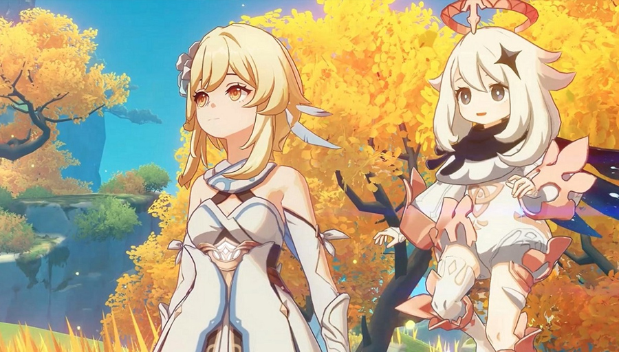

Sejarah Perkembangannya

Perjalanan Genshin Impact dimulai pada awal 2017 ketika miHoYo memutuskan untuk keluar dari zona nyaman mereka sebagai pengembang game mobile skala kecil menjadi pencipta dunia open-world yang ambisius. Dengan modal awal sekitar US$100 juta dan tim yang awalnya hanya berjumlah 120 orang namun membengkak hingga ratusan staf, proyek ini bertujuan menggabungkan estetika anime dengan eksplorasi mendalam layaknya The Legend of Zelda: Breath of the Wild. Pengembangannya menghadapi tantangan teknis yang masif karena mereka bertekad menghadirkan fitur cross-platform yang mulus, di mana pemain di ponsel pintar, PC, dan konsol dapat bermain bersama dalam satu dunia yang sama dengan kualitas visual yang setara, sebuah pencapai an yang saat itu dianggap sangat berisiko bagi pengembang asal Tiongkok.
Setelah resmi diluncurkan secara global pada 28 September 2020, Genshin Impact langsung meledak menjadi fenomena budaya dan finansial global yang tak terduga, meraup keuntungan miliaran dolar dalam tahun pertamanya. Keberhasilan ini tidak lepas dari strategi pembaruan konten yang sangat agresif setiap enam minggu sekali, yang secara konsisten memperluas peta Teyvat melalui wilayah -wilayah baru seperti Inazuma yang terinspirasi Jepang, Sumeru yang bertema Asia Selatan dan Timur Tengah, hingga Fontaine yang bernuansa revolusi industri Eropa. Ekspansi ini tidak hanya menambah luas wilayah geografis, tetapi juga secara teknis meningkatkan kompleksitas mekanik permainan, mulai dari sistem teka-teki lingkungan yang rumit hingga penambahan elemen baru seperti Dendro yang mengubah total strategi pertempuran para pemain.
Memasuki fase kedewasaannya, evolusi Genshin Impact kini telah melampaui sekadar media permainan video dengan terbentuknya identitas baru di bawah merek global HoYoverse pada tahun 2022. Komitmen miHoYo untuk menjaga umur panjang judul ini terlihat dari investasi berkelanjutan dalam pengembangan teknologi grafis, orkestrasi musik orisinal yang melibatkan konduktor ternama dunia, serta kolaborasi lintas media termasuk proyek anime bersama studio ufotable. Dengan rencana jangka panjang untuk merilis tujuh wilayah utama hingga mencapai konklusi cerita di Snezhnaya dan seterusnya, Genshin Impact telah menetapkan standar baru dalam industri game Live-Service mengenai bagaimana sebuah properti intelektual dapat terus tumbuh dan menjaga relevansinya di mata komunitas global yang sangat besar.